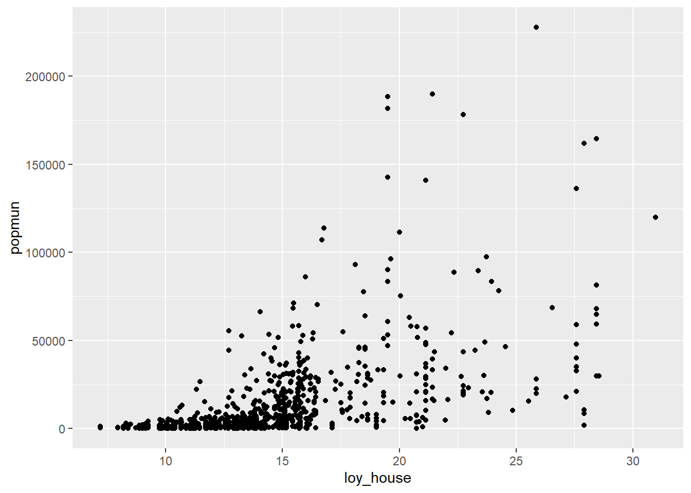
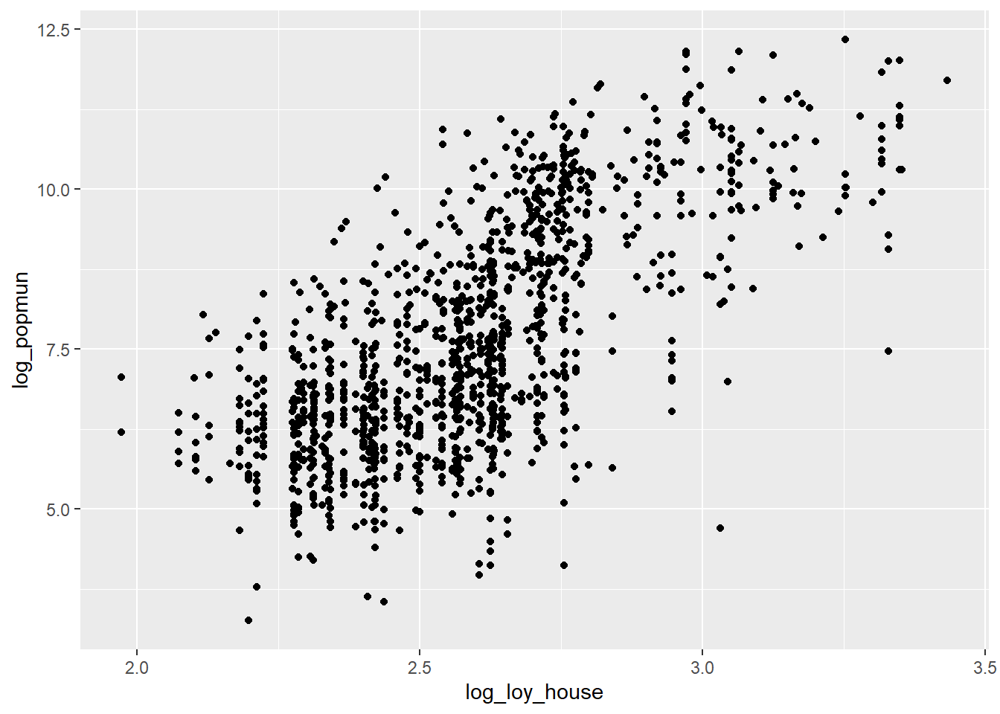
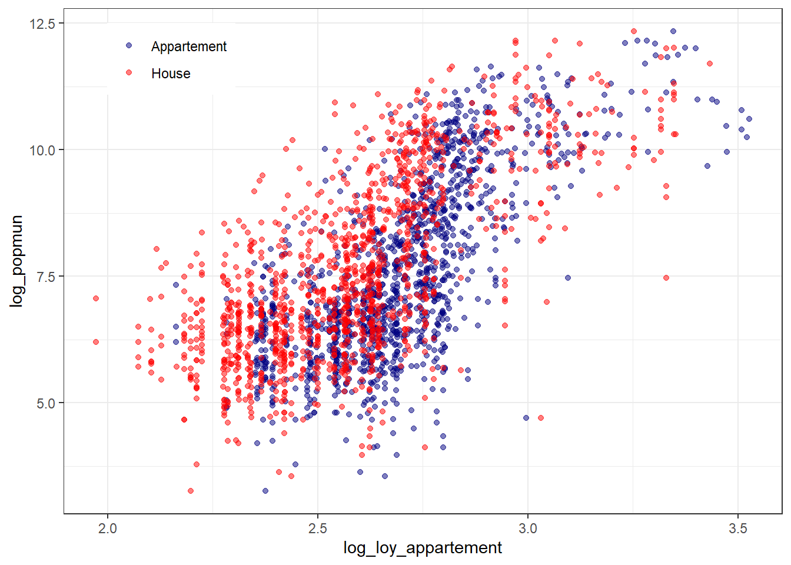
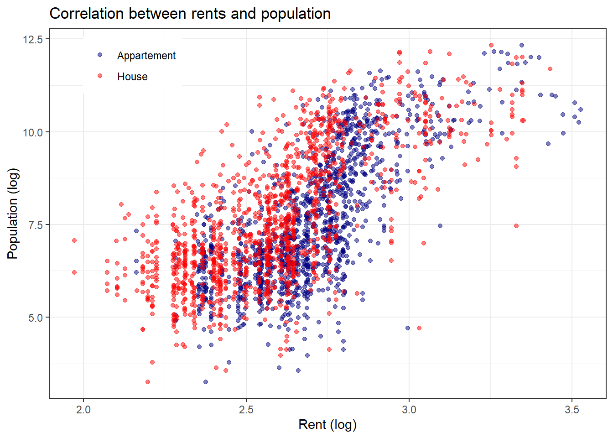
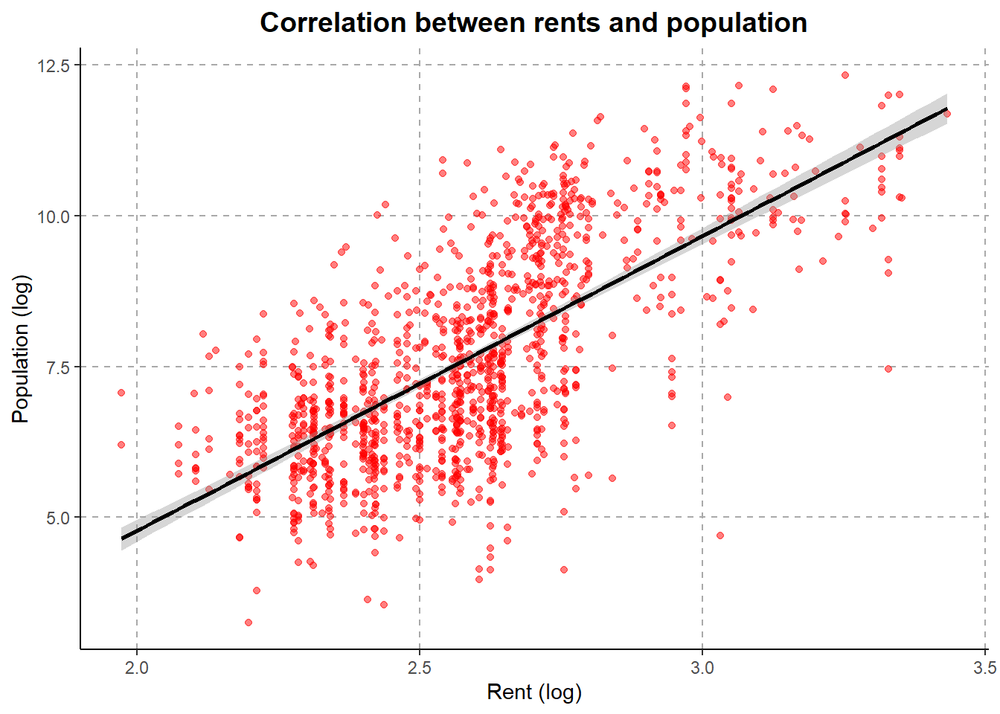

Make appealing data visualization with ggplot2 package
Plots with ggplot2
We are going, by practicing over several plots, to make -hopefully- appealing data visualization. We are going to take advantage of the/temp/idf_data.csv we built earlier on., monu_histo.csv containing the list of all monuments listed in Ile-de-France with the zip code, gares.shp listing all stations in the Île-de-France train network, with their associated location.
path ="C:/Users/mateomoglia/Dropbox/courses/polytechnique/2026_eco51432ep"library(dplyr) # Load the dplyr packagelibrary(ggplot2) # Make graphslibrary(tidyr) # To manipulate datalibrary(plotly) # Interactive graphs
Attachement du package : 'plotly'
L'objet suivant est masqué depuis 'package:ggplot2':
last_plot
L'objet suivant est masqué depuis 'package:stats':
filter
L'objet suivant est masqué depuis 'package:graphics':
layout
library(sf) # For spatial data
Linking to GEOS 3.12.2, GDAL 3.9.3, PROJ 9.4.1; sf_use_s2() is TRUE
# Open the data ----------------------------------------------------------# Data were created before and saved under /temp/idf_data.csv idf_data =read.csv2(paste0(path,"/temp/idf_data.csv")) %>%mutate(log_loy_appartement =log(loy_appartement),log_loy_house =log(loy_house),log_popmun =log(popmun))
General description
This package is a workhorse of data visualization in R. The structure is somewhat similar to the dplyr approach. The idea is to apply to a ggplot() object a series of functions to add elements to the plot and control the appearance of the latter. The syntax requires:
Data, from which the graph will be made
Mapping, a set of instructions to “structure” the appearance of the graphs. Usually, it sets the axes, the grouping variables, among other things. It is also referred as aesthetics
Layers, which converts the data and the mapping into geometries (points, lines, regression lines, bar charts, etc.)
[opt.] Scales, to control the appearance of the mapping (axes length, colors, etc.)
[opt.] Guides/Themes, to control the general appearance of the graph
Usually, the ggplot function takes two main arguments and one to many sub-arguments. The two main arguments are (i) the data on which the visualization is required and (ii) an aesthetic. The aesthetic controls the key element of the visualization, such as the x and y axes or the grouping colors/linetypes.
Let’s imagine we have a dataset df with x_val and y_val values and a grouping variable (gender, country, etc.). Hence, to plot a scatter plot, we would code:
ggplot(df, mapping =aes(x = x_val, y = y_val, colour = gender)) +# Set the graphgeom_point() +# Add pointstheme_void() # Control the general appearance of the graph
To export
The standard way to save plot created with ggplot() is to use the function ggsave(). It takes several arguments:
plot: by default, it saves the latest plot (opened in the Plots pane) or the ggplot object created
path: the path where to save the plot. Do not forget the extension! For instance, .pdf, .jpg, etc.
dpi: the quality of the plot (I use dpi=300 as a trade-off between lisibility and size)
width and height: the width and the height of the created object
unit: the unit for width and height (inches, pixels, centimeters)
Standard graphs
Scatter plot
In the previous section, we tried to understand the relationship between rents and population size at the municipal level. As we use bivariate analysis, a data visualisation is useful to provide intuition.
To make a very standard graph:
ggplot(idf_data, aes(x = loy_house, y = popmun)) +geom_point()

This graph suffers from two issues: it is not visually appealing nor clear and it is not readable. We are going to take advantage of the power and high flexibility of the ggplot package to increase the quality of the graph. Moreover, we are going to use logged variables to make the data more visually appealing.
ggplot(idf_data, aes(x = log_loy_house, y = log_popmun)) +geom_point()

Now that graph is more readble, we can plot several columns at once. Here, the aes() for y is the same for all layers (two layers of points), so keep it in the main ggplot() options. FOr each layer, we specify for x but also for colour. Each group we defined is going to be a specific colour.
R applies the standard color scheme. Colours can be chosen manually (we will see that after) or thanks to a scale from a package. The most popular package is viridis which provides a lot of pallettes for ggplot. It is especially useful as those palettes are suited for colourblind people (more than a tenth of the population!). Because we set the aes colour, we use scale_colour_viridis_d(). The d stands for discrete, as opposed to continuous.
R offers a number of built-in “themes” to control the general appearance of the graph (backgroud, axes, minor grids, etc.). Here, I use theme_bw(). You can try: theme_minimal(), theme_classic(), theme_void(). Instead of using viridis, I set manually the colour for each group I defined.
I do not like the legend on the right of the graph, I want it inside the plot region. Here, it is important to set the theme() control after the theme_bw() because it overwrites it (as most command on R).
Warning: A numeric `legend.position` argument in `theme()` was deprecated in ggplot2
3.5.0.
ℹ Please use the `legend.position.inside` argument of `theme()` instead.

To stick with the publication standard, I adapt the names of the axes and the title of the graph.
ggplot(idf_data, aes(y = log_popmun)) +geom_point(aes(x = log_loy_appartement, colour ="Appartement"), alpha =0.5) +geom_point(aes(x = log_loy_house, colour ="House"), alpha =0.5) +scale_color_manual(values =c("House"="red", "Appartement"="navy")) +theme_bw() +theme(legend.position =c(0.15,0.9),legend.title =element_blank()) +labs(x ="Rent (log)", y ="Population (log)", title ="Correlation between rents and population")

One additional graph, plotting the relationship we presented in the previous section. The layer for regression lines is geom_smooth. I also play with the location, the size, and the centeredness, of the title.
ggplot(idf_data, aes(y = log_popmun, x = log_loy_house)) +geom_point(aes(x = log_loy_house), colour ="red", alpha =0.5) +geom_smooth(method ="lm", colour ="black") +theme_classic() +theme(panel.grid.major =element_line(colour ="darkgray", linetype ="dashed"),panel.grid.minor =element_blank(),plot.title=element_text(colour ="black", face ="bold", hjust =0.5, size =14)) +labs(x ="Rent (log)", y ="Population (log)", title ="Correlation between rents and population")
`geom_smooth()` using formula = 'y ~ x'

Bar charts
In the population data, we know the number of each CSP (socio-professional categories) in the population. Our first exercise will be to make a bar chart out of those data, with the average share of each CSP.
Exercise
Using tidyr::pivot_wider(), create a long dataframe containing, per municipality, the count of each CSP.
By CSP, summarize the count of each CSP across all cities.
Using geom_col(), make a barchart. To add colour, use fill = csp. Store the graph in an object. Export it as .pdf.
Because the csp column has information that are not straightfoward to interpret, I use the following commands to manually adapt the labels on the x axis. With theme it is possible to add a bit of angle to make it more readable.
p = p +scale_x_discrete(labels =c("agri"="Agriculture", "cadre"="Executives", "profint"="Intermediate", "employ"="Employees", "ouvri"="Workers", "retraite"="Retired", "autsap"="Other inactive")) +theme(axis.text.x =element_text(angle =15, hjust =1))
Using the function plotly::ggplotly(p, tooltip = "text"), make it interactive!
Box plots
For each CSP, what is the distribution of the count across municipalities? Use the layer geom_boxplot() to know it!
Density plots
Another way to possibility to grasp on the distribution is to use a density plot: